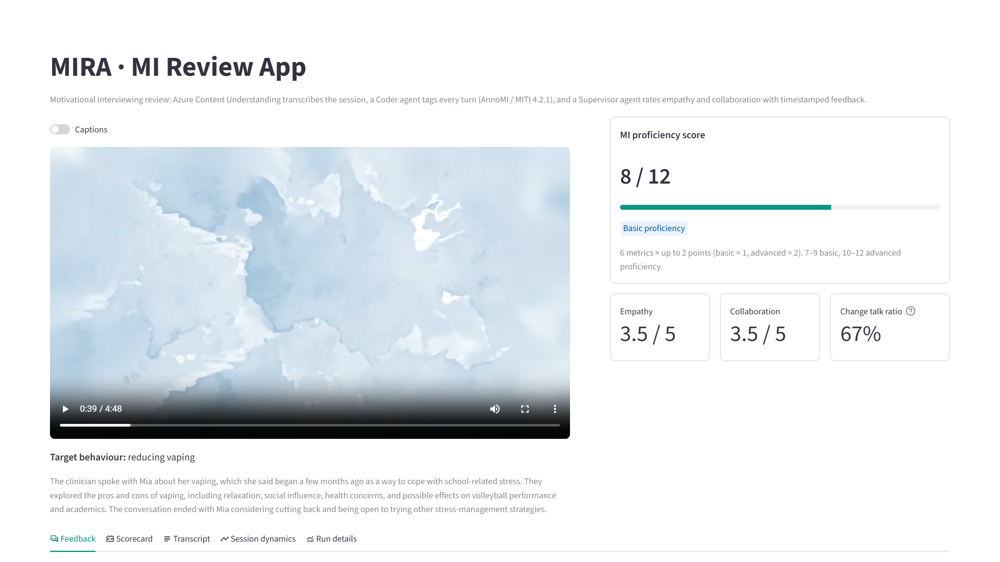
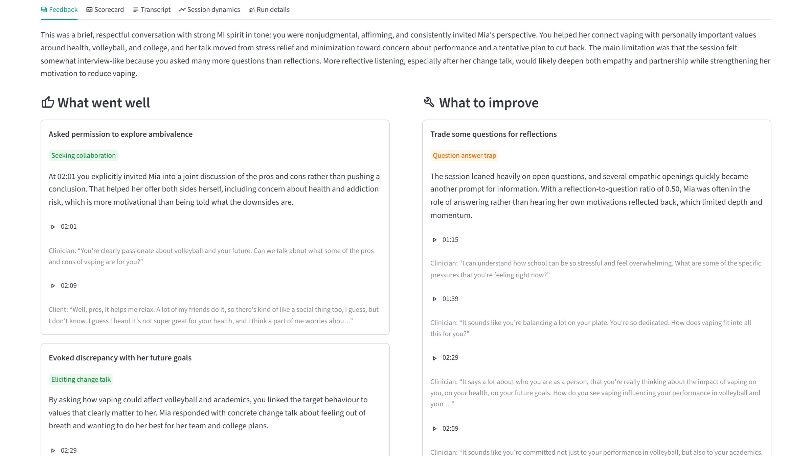
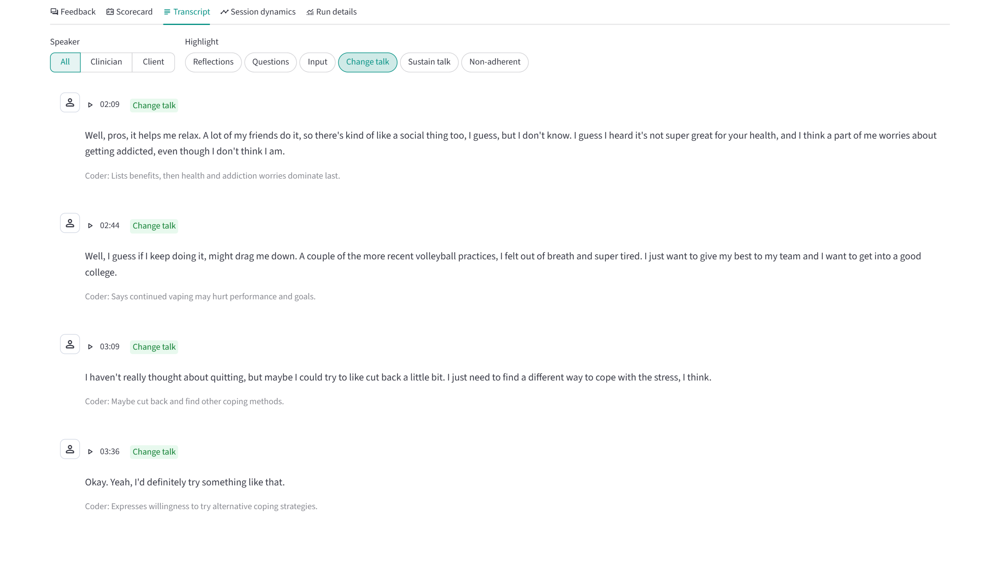
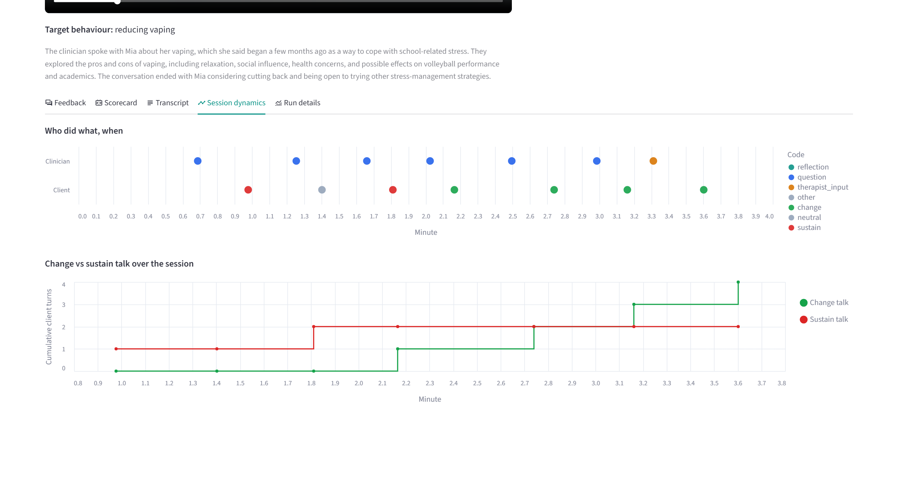

AI review of Motivational Interviewing sessions
Upload a recorded counselling session. Get a transcript, an MI scorecard and timestamped coaching in about 1–2 minutes.
Azure Content Understanding · Azure OpenAI gpt-5.4 in Microsoft Foundry · LangGraph · Streamlit
A trained coder reviews each recording turn by turn. It takes hours per session.
Manual review is expensive and doesn't scale, so most sessions never get feedback.
Even experts disagree: two AnnoMI experts coding the same client turns agree only κ 0.47 (0 = chance, 1 = perfect).
Motivational Interviewing is a collaborative way of talking that strengthens a person's own motivation to change: smoking, alcohol, medication, diet, exercise.
“I'm so glad that you came in today… this is a judgment-free zone.”
“How does vaping fit into all this for you?”
“How do you see vaping influencing your performance in volleyball?”
“What would you like to do moving forward in terms of vaping?”
“What would you like to do moving forward?”
“It says a lot about who you are as a person…”
simple: “School can be so stressful.”
complex: “You're balancing a lot on your plate.”
A longer reflection that pulls several points together.
“I felt out of breath and super tired.”
“Honestly, it helps me relax.”
“I have volleyball practice basically every day.”
| Metric | Mia | Basic · Advanced | Points |
|---|---|---|---|
| Empathy (1–5) LLM | 3.5 | ≥ 3.5 · ≥ 4 | +1 |
| Collaboration (1–5) LLM | 3.5 | ≥ 3.5 · ≥ 4 | +1 |
| Reflections ÷ questions Python | 0.50 | ≥ 1 · ≥ 2 | 0 |
| % open questions Python | 100% | > 40% · > 50% | +2 |
| % complex reflections Python | 67% | > 40% · > 50% | +2 |
| % MI-adherent turns Python | 100% | ≥ 90% · 100% | +2 |
calculateLLMs never do arithmetic
format_quoteLLMs cite turn numbers; code inserts quotes and timestamps
data_objectEvery output is typed and validated (Pydantic)
speaker: "Speaker 1" start: 149750 ms text: "It says a lot about who you are as a person… How do you see vaping influencing your performance in volleyball…?" ClinicianSpeaker = "Speaker 1" → clinician
main_behaviour: question question: open mi_behaviour: affirm adherence: adherent rationale: "Strong affirmation followed by open question linking vaping to goals."
talk_type: change "…I felt out of breath and super tired. I just want to give my best to my team." rationale: "Says continued vaping may hurt performance and goals."
open questions 6 / 6 → 100% (+2) change talk 4 / (4 + 2) → 67% reflections ÷ questions 3 / 6 → 0.50 no LLM involved: same codes, same score
strength: "Evoked discrepancy with
her future goals"
skill: eliciting_change_talk
turn_ids: [8, 9] ← ids only, no quotes




“What should I say differently next time?”
“I can't listen to every recording.”
“Is our MI training working?”
verifiedBuilt on the MITI 4.2.1 standard
person_checkRates the clinician's technique, never the client
schoolA coaching aid, not a certification or clinical decision tool
thumbs_up_down110 high · 23 low quality, rated by experts
sellEvery utterance coded: question, reflection, clinician input, client talk
groups7 transcripts coded by all 10 experts: gives a majority vote and a human-agreement level
2 transcripts as prompt examples (60, 131)
27 held out for testing: 17 high / 10 low · 1,276 turns
104 not used
Mm-hmm. Yeah, I de-I definitely don't wanna come back here.
Yeah, I definitely don't want to come back here.
6 of 12 words count as errors (50% WER), yet the meaning is identical. Much of the error rate is fillers and false starts that the human transcriber kept.
WER = (substituted + deleted + inserted words) ÷ expert words. A sanity check on two videos, not a benchmark: Content Understanding also merges very short interjections such as “Mm-hmm” into neighbouring turns.
27 held-out transcripts · rows = expert label · columns = MIRA's label · diagonal = agreement · cell shading = % of the row
Cohen's κ = agreement after removing lucky guesses. 0 = chance · 1 = perfect. A lazy coder that calls every client turn “neutral” gets 69% accuracy but κ = 0.
Measured on the 7 sessions coded by all 10 experts (216 clinician · 212 client turns)
Compare within a panel, not across: a single expert is noisier than a consensus. Across all 27 held-out transcripts (1,276 turns), MIRA reaches κ 0.85 on behaviour type. Model: gpt-5.4, low reasoning effort.
points for all 10 expert-rated poor sessions
points for 15 of 17 expert-rated good sessions
good-vs-poor pairs ranked the right way (4 ties, 2 reversed)
In good sessions it flags missed opportunities; in poor ones, confrontation and persuasion.
MIRA never sees the expert's quality label (input: expert transcript text). The bands are strict: 8 of 17 good demo sessions still land in “Developing”. The score ranks sessions well, but its cut-offs are demanding.
Today the app is a local Streamlit prototype with no login; recordings, transcripts and reports are kept on the local disk.
Codes turns at or above the human level, on 5 of 5 code families
Ranks good above poor MI in 164 of 170 pairs
479 / 479 cited turns are real: no invented evidence
About 9¢ and ~1.5 min per 3-minute review
Simple vs complex reflection is hard (experts agree only κ 0.22), so scores can shift 1–2 points between runs
Tested on demonstration videos, not real clinical sessions
Words only: no tone, pauses or body language yet
3-run majority vote in the Coder for stable scores
Pilot on consented real sessions, coded by MITI experts
Voice features: talk time, pauses, interruptions